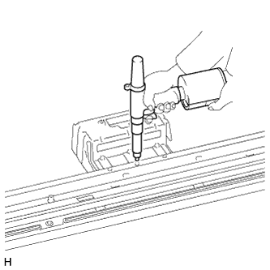
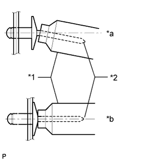
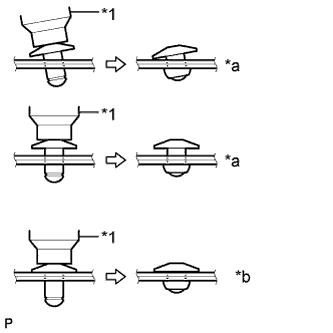
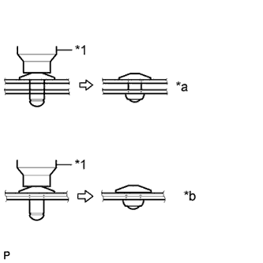
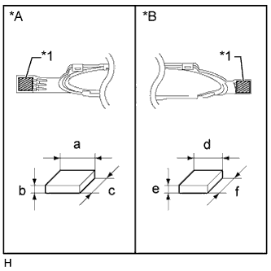

SIDE STEP > REASSEMBLY |
| 1. INSTALL STEP LIGHT BRACKET |
|  |
Install a nose piece to an air riveter or hand riveter.
Insert the mandrel part of a new rivet into the nose piece.
Using the riveter, install the step light bracket with the 3 rivets as shown in the illustration.
|  |
| *1 | Riveter |
| *2 | Mandrel |
| *a | INCORRECT |
| *b | CORRECT |
|  |
| *1 | Riveter |
| *a | INCORRECT |
| *b | CORRECT |
|  |
| *1 | Riveter |
| *a | INCORRECT |
| *b | CORRECT |
| 2. INSTALL STEP PANEL WIRE LH |
Attach the 10 clamps to install the wire.
| 3. INSTALL STEP LIGHT ASSEMBLY |
Install the 2 lights with the 4 bolts.
| 4. INSTALL SIDE STEP BRACKET LH |
Install the side step bracket with the 2 bolts.
| 5. INSTALL NO. 2 SIDE STEP BRACKET LH |
Install the No. 2 side step bracket with the 2 bolts.
| 6. INSTALL NO. 3 SIDE STEP BRACKET LH |
Install the No. 3 side step bracket with the 2 bolts.
| 7. INSTALL NO. 6 ROCKER PANEL MOULDING PROTECTOR |
Install the No. 6 rocker panel moulding protector with the 2 bolts.
| 8. INSTALL SIDE DOOR STEP PLATE REAR COVER LH |
| Item | Temperature |
| Step Plate Cover | 20 to 30°C (68 to 86°F) |
| Side Door Step Plate Rear Cover | 20 to 30°C (68 to 86°F) |
Clean the step plate cover surface.
Using a heat light, heat the step plate cover surface.
Remove the double-sided tape from the step plate cover surface.
Wipe off any tape adhesive residue with cleaner.
When using a new side door step plate rear cover:
Using a heat light, heat the side door step plate rear cover surface.
|  |
When reusing the side door step plate rear cover:
Using a heat light, heat the side door step plate rear cover surface.
Remove the double-sided tape from the side door step plate rear cover.
Wipe off any tape adhesive residue with cleaner.
Apply double-sided tape to the side door step plate rear cover as shown in the illustration.
| *A | for Front Side |
| *B | for Rear Side |
| *1 | Protective Tape |
| Area | Measurement |
| a | 20 mm (0.787 in.) |
| b | 1 mm (0.0394 in.) |
| c | 20 mm (0.787 in.) |
| d | 20 mm (0.787 in.) |
| e | 1 mm (0.0394 in.) |
| f | 16 mm (0.630 in.) |
Remove the peeling paper from the face of the side door step plate rear cover.
Attach the 17 claws to install the side door step plate rear cover.
Install the 3 retainers.
| 9. INSTALL STEP PANEL LH |
Install the step panel with the 3 bolts.
| 10. INSTALL STEP PLATE LH |
Attach the 16 clips to install the step plate.